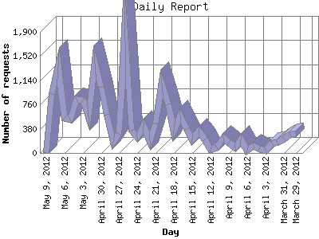

The Daily Report identifies the activity for each day within the reporting period. Remember that one page hit can result in several server requests as the images for each page are loaded.

| Day | Number of requests | Number of page requests | |
|---|---|---|---|
| 1. | March 29, 2012 | 298 | 0 |
| 2. | March 30, 2012 | 282 | 0 |
| 3. | March 31, 2012 | 221 | 0 |
| 4. | April 1, 2012 | 167 | 0 |
| 5. | April 2, 2012 | 145 | 0 |
| 6. | April 3, 2012 | 33 | 0 |
| 7. | April 4, 2012 | 68 | 0 |
| 8. | April 5, 2012 | 114 | 0 |
| 9. | April 6, 2012 | 34 | 0 |
| 10. | April 7, 2012 | 217 | 0 |
| 11. | April 8, 2012 | 93 | 0 |
| 12. | April 9, 2012 | 158 | 0 |
| 13. | April 10, 2012 | 232 | 0 |
| 14. | April 11, 2012 | 88 | 0 |
| 15. | April 12, 2012 | 44 | 0 |
| 16. | April 13, 2012 | 208 | 0 |
| 17. | April 14, 2012 | 343 | 0 |
| 18. | April 15, 2012 | 216 | 0 |
| 19. | April 16, 2012 | 375 | 0 |
| 20. | April 17, 2012 | 584 | 0 |
| 21. | April 18, 2012 | 345 | 2 |
| 22. | April 19, 2012 | 764 | 0 |
| 23. | April 20, 2012 | 1,086 | 0 |
| 24. | April 21, 2012 | 466 | 0 |
| 25. | April 22, 2012 | 191 | 0 |
| 26. | April 23, 2012 | 422 | 0 |
| 27. | April 24, 2012 | 253 | 0 |
| 28. | April 25, 2012 | 347 | 0 |
| 29. | April 26, 2012 | 1,864 | 0 |
| 30. | April 27, 2012 | 300 | 0 |
| 31. | April 28, 2012 | 180 | 0 |
| 32. | April 29, 2012 | 595 | 0 |
| 33. | April 30, 2012 | 1,032 | 0 |
| 34. | May 1, 2012 | 1,415 | 0 |
| 35. | May 2, 2012 | 578 | 0 |
| 36. | May 3, 2012 | 831 | 0 |
| 37. | May 4, 2012 | 837 | 0 |
| 38. | May 5, 2012 | 523 | 1 |
| 39. | May 6, 2012 | 555 | 0 |
| 40. | May 7, 2012 | 1,359 | 0 |
| 41. | May 8, 2012 | 924 | 0 |
| 42. | May 9, 2012 | 1 | 0 |
Most active day March 14, 2012 : 3 pages sent. 1,864 requests handled.
Daily average: 0 pages sent. 447 requests handled.
This report was generated on May 10, 2012 02:31.
Report time frame March 14, 2012 00:04 to May 9, 2012 00:00.
| Web statistics report produced by: analog 6.0 / Report Magic 2.21 |